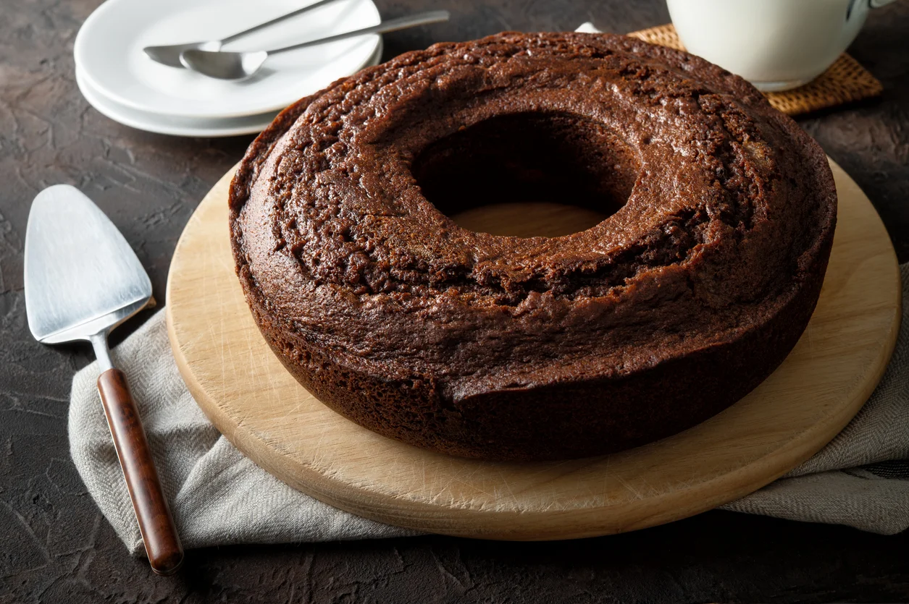

Bolo de Chocolate
Bolo de Chocolate
Tempo de Preparo 45min
Ingredientes
- 3 0vos
- Uma xícara e meia de chá de açucar
- 1 xícra de chá de óleo
- 1 xícara de chá de Chocolate
- 2 xícara de chá de farinha de trigo
- 1 xícara de chá de água quente
- 1 colher de sopa de fermento em pó
Modo de Preparo
1 Em um liquidificador adicione os ovos, o chocolate em pó, a manteiga, a farinha de trigo, o açúcar e o
leite, depois bata por 5 minutos.
2 Adicione o fermento e misture com uma espátula delicadamente.
3 Em uma forma untada, despeje a massa e asse em forno médio (180 ºC) preaquecido por cerca de 40 minutos.
Não se esqueça de usar uma forma alta para essa receita: como leva duas colheres de fermento, ela cresce
bastante! Outra solução pode ser colocar apenas uma colher de fermento e manter a sua receita em uma forma
pequena.
Calda Modo de Preparo
